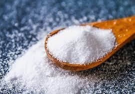

Ingredients:
For the Pizza Dough:
- 2 1/4 teaspoons (1 packet) active dry yeast
- 1 teaspoon sugar
- 1 cup warm water
- 3 cups all-purpose flour
- 1 teaspoon salt 
- 1 tablespoon olive oil


For the Pizza Sauce:
- 1 can (14 ounces) crushed tomatoes
- 2 cloves garlic, minced
- 1 teaspoon dried oregano
- 1 teaspoon dried basil
- Salt and pepper to taste


Toppings (customize based on your preferences):
- Shredded mozzarella cheese
- Sliced tomatoes
- Sliced bell peppers
- Sliced mushrooms
- Sliced onions
- Pepperoni or cooked sausage
- Fresh basil leaves (optional)
Instructions:
Pizza Dough:
- In a small bowl, combine the warm water, sugar, and yeast. Let it sit for about 5-10 minutes until it becomes frothy.
- In a large mixing bowl, combine the flour and salt. Make a well in the center and pour in the yeast mixture and olive oil.
- Mix the ingredients until a dough forms. Knead the dough on a floured surface for about 5-7 minutes until it becomes smooth and elastic.
- Place the dough in a greased bowl, cover it with a damp cloth, and let it rise in a warm place for 1-2 hours or until it doubles in size.
Pizza Sauce:
- In a saucepan, combine the crushed tomatoes, minced garlic, oregano, basil, salt, and pepper.
- Simmer the sauce over low heat for about 15-20 minutes, stirring occasionally. Adjust the seasoning to taste.
Assembling and Baking:
- Preheat your oven to the highest temperature it can reach (usually around 475-500°F or 245-260°C).
- Divide the risen dough into the desired number of pizza crusts. Roll out each portion on a floured surface to your preferred thickness.
- Transfer the rolled-out dough to a pizza stone or baking sheet.
- Spread a thin layer of the pizza sauce over the dough, leaving a border around the edges.
- Add your desired toppings, including shredded mozzarella and any other ingredients you like.
- Bake the pizza in the preheated oven for about 12-15 minutes or until the crust is golden brown and the cheese is bubbly and lightly browned.
- Remove the pizza from the oven, let it cool for a few minutes...
Finished Dish